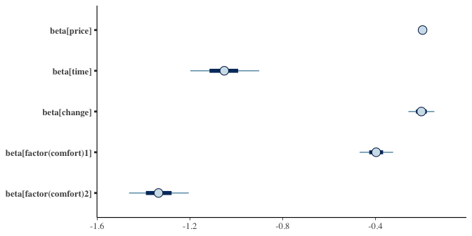

Discrete choice models explain decisions between mutually exclusive alternatives through the utility a decider attaches to each of them. RprobitB estimates such models in a Bayesian probit framework, for binary, multinomial, ordered, and ranked responses, observed once per decider or repeatedly in panel data. Preferences may vary across the population, either through random coefficients or latent classes. The posterior draws obtained from the Gibbs sampler support choice prediction, marginal effects, and model comparison by information criteria and Bayes factors.
Example
We use 2929 stated choices by 235 Dutch individuals deciding between two hypothetical train trip options "A" and "B" based on the price, the travel time, the number of rail-to-rail transfers (changes), and the level of comfort (where 0 is the best comfort and 2 the worst). The data set Train of the mlogit package records the prices in cents of Dutch guilders and the travel times in minutes, which we convert to euro and hours:
data("Train", package = "mlogit")
Train$price_A <- Train$price_A / 100 / 2.20371
Train$price_B <- Train$price_B / 100 / 2.20371
Train$time_A <- Train$time_A / 60
Train$time_B <- Train$time_B / 60
head(Train)
#> choiceid id choice price_A price_B time_A time_B change_A change_B
#> 1 1 1 A 10.89073 18.15121 2.500000 2.500000 0 0
#> 2 2 1 A 10.89073 14.52097 2.500000 2.166667 0 0
#> 3 3 1 A 10.89073 18.15121 1.916667 1.916667 0 0
#> 4 4 1 B 18.15121 14.52097 2.166667 2.500000 0 0
#> 5 5 1 B 10.89073 14.52097 2.500000 2.500000 0 0
#> 6 6 1 B 18.15121 10.89073 1.916667 2.166667 0 0
#> comfort_A comfort_B
#> 1 1 1
#> 2 1 1
#> 3 1 0
#> 4 1 0
#> 5 1 0
#> 6 0 0Choice models in RprobitB are estimated with the function fit():
library(RprobitB)
set.seed(1)
train_model <- fit(
choice ~ price + time + change + factor(comfort) | 0, # model formula
data = Train, # choice data
column_decider = "id", # decider identifiers
column_occasion = "choiceid" # occasion identifiers
)summary() reports the posterior together with convergence diagnostics:
summary(train_model)
#> Bayesian probit choice model
#> Formula: choice ~ price + time + change + factor(comfort) | 0 | 0
#> Samples: 500 retained per chain, 4 chains
#>
#> variable mean mode sd rhat ess_bulk
#> beta[price] -0.197 -0.199 0.00895 1.00 437
#> beta[time] -1.052 -1.052 0.09190 1.00 652
#> beta[change] -0.202 -0.207 0.03463 1.00 748
#> beta[factor(comfort)1] -0.397 -0.398 0.04403 1.00 672
#> beta[factor(comfort)2] -1.335 -1.344 0.07909 1.01 602plot() displays the results via bayesplot:
plot(train_model, type = "interval")
The negative estimate signs indicate that a higher fare, a longer trip, an extra change, and a poorer comfort class each lower the utility of an alternative (as expected). Beyond the signs, the ratios of the coefficients can be interpreted as trade-offs:
compensation <- interpret(train_model, reference = "price")
compensation
#> 1 `time` compensates -5.35 `price` (95% interval -6.14 to -4.53)
#> 1 `change` compensates -1.03 `price` (95% interval -1.35 to -0.698)
#> 1 `factor(comfort)1` compensates -2.02 `price` (95% interval -2.44 to -1.6)
#> 1 `factor(comfort)2` compensates -6.8 `price` (95% interval -7.57 to -6.05)Read this way, deciders would pay
- 5.35 euro to save one hour of travel time,
- 1.03 euro to avoid one change of train,
- 2.02 euro for the highest comfort class instead of the middle one, and
- 6.8 euro for the highest comfort class instead of the lowest.
The fitted model can also be used to predict choices for trips that the data do not contain. Below, trip "B" saves an hour over trip "A" and charges a premium of 2, 5, or 8 euro for it:
scenario <- data.frame(
price_A = 20, price_B = c(22, 25, 28),
time_A = 2.5, time_B = 1.5,
change_A = 0, change_B = 0,
comfort_A = 1, comfort_B = 1
)
predict(train_model, newdata = scenario)
#> id choiceid .prediction probability_A probability_B
#> 1 1 1 B 0.2557624 0.7442376
#> 2 2 1 B 0.4725960 0.5274040
#> 3 3 1 A 0.6980868 0.3019132The prediction turns where the premium passes the 5.35 euro that the hour is worth: the faster trip is the predicted choice at 2 euro, the two are almost tied at 5 euro, and the slower trip wins at 8 euro.
Besides prices, are the other three choice attributes worth modeling at all? update() refits the model with a changed specification on the same data, and bayes_factor() compares the two:
train_model_small <- update(train_model, . ~ price) # using only price
comparison <- bayes_factor(train_model, train_model_small, log = TRUE)
comparison
#> Estimated log Bayes factor in favor of model1 over model2: 150.68432The log Bayes factor of 151 is decisive: travel time, changes, and comfort carry information about the choices that the price alone does not.
What the package covers
The RprobitB function fit() estimates the following model variants:
- binary, multinomial, ordered, and ranked responses,
- cross-sectional and panel data,
- correlated or uncorrelated normal or log-normal random effects,
- latent classes with a fixed, sparse finite, or Dirichlet-process based number of components.
Five vignettes cover the details:
- Get started fits a first model and walks through summaries, convergence diagnostics, plots, the posterior draws, and running chains in parallel.
- Model specification and variants covers the model normalization, the prior, the three covariate types, individual choice sets, and ordered and ranked responses.
- Modeling preference heterogeneity covers random coefficients with six mixing distributions and latent classes with a fixed, sparse finite, or Dirichlet-process based number of components.
- Posterior prediction covers predictions for the population and for individual deciders, scenarios for new data, residuals, and marginal effects.
- Bayesian model evaluation covers model comparison via WAIC, PSIS-LOO, and Bayes factors.
Posterior draws are stored in the posterior format. Chains run in parallel through a future plan. The examples use data sets of the mlogit, AER, MASS, and choicedata packages, which are introduced in the vignettes.
Citation
citation("RprobitB")
#> Um Paket 'RprobitB' in Publikationen zu zitieren, nutzen Sie bitte:
#>
#> Oelschläger L (2026). _RprobitB: Bayesian Probit Choice Modeling_. R
#> package version 2.0.0, <https://loelschlaeger.de/RprobitB/>.
#>
#> Ein BibTeX-Eintrag für LaTeX-Benutzer ist
#>
#> @Manual{,
#> title = {RprobitB: Bayesian Probit Choice Modeling},
#> author = {Lennart Oelschläger},
#> year = {2026},
#> note = {R package version 2.0.0},
#> url = {https://loelschlaeger.de/RprobitB/},
#> }The broader methodological foundation is described in Oelschläger (2026), Overcoming Challenges in Modeling Choice Behavior Heterogeneity, doctoral dissertation, Bielefeld University, https://pub.uni-bielefeld.de/record/3014719. The latent-class mixed multinomial probit model is introduced in Oelschläger and Bauer (2021), Bayes Estimation of Latent Class Mixed Multinomial Probit Models, TRB Annual Meeting 2021, https://trid.trb.org/view/1759753.